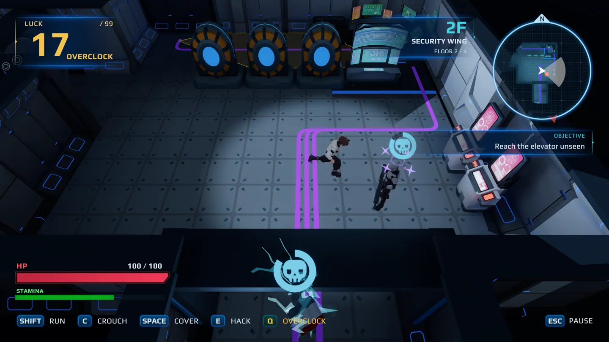
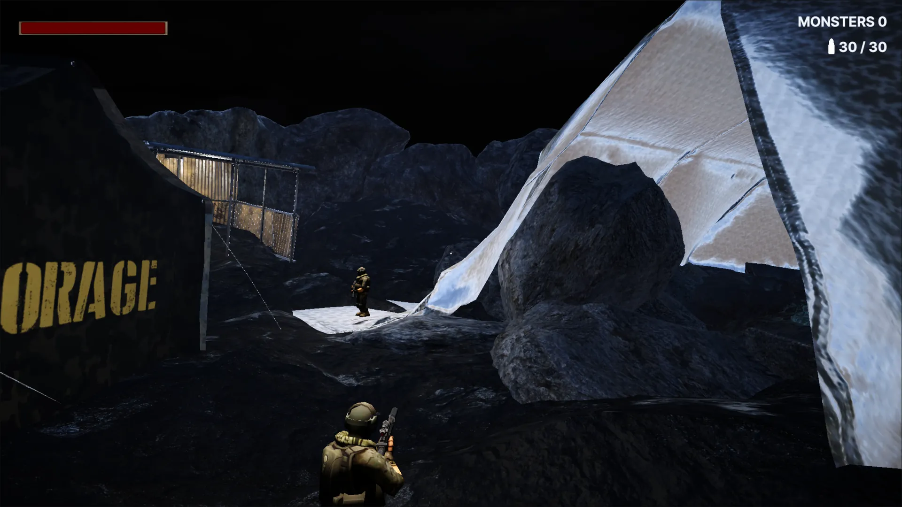
Expedition 33 모작 · 담당 이펙트
게임 클라이언트 프로그래머
김석호
설계·결정·검증은 제가 맡고, 조사·작성·반복 작업은 AI에 단계별로 맡겼습니다.
DirectX 11로 프레임워크와 툴을 만들던 때부터 Unity 팀 프로젝트까지, AI에게 무엇을 맡기고 무엇을 직접 확인할지를 프로젝트마다 다시 정해 왔습니다.
AI 협업 방식
네 프로젝트, 맡기는 방식이 매번 달랐습니다
지금은 이렇게 나눕니다. 방향은 직접 해 볼 수 있는 시안으로 정하고, 지시는 계획서로 남기고, 실행은 단계별로 맡기고, 확인은 직접 플레이로 합니다. 잘못 맡긴 일은 기록해 두었다가 다음 지시에 반영합니다.
01 · Codex
Gunfire Reborn
작업 범위 문서화 · 저장소 AGENTS.md
프레임워크를 익히던 단계라 GameLogic 층 분리와 게임플레이 구현은 직접 했고, 계획서 작성과 에디터의 ImGui 화면 같은 반복 작업을 맡겼습니다.
100완료 문서 · Post_Project 제외
AGENTS.md
정본 판단 규칙 테이블은 csv = authoring 정본, json = 런타임 입력으로 읽는다. 새 기능을 읽을 때는 먼저 authoring source, runtime input, mutable runtime owner를 분리해서 본다. docs/FINISHED · 100개
[PLAN] gamelogic_implementation.md
monster_sword_weak_point_execution_plan.md
player_attack_ray_execution_plan.md
…
02 · Codex
Expedition 33
계획서 검토·승인 범위 · hook으로 위험한 수정 차단
AI가 쓴 계획서는 반려·승인하며 다졌고, 승인 범위를 넘는 변경은 멈추고 다시 승인받게 했습니다. 글로 정한 규칙이 안 지켜지던 곳은 hook으로 실행 직전에 막았습니다.
hook실행 직전에 차단
pre_tool_use.py · permissionDecision: "deny"
Engine_Shader_* writes are blocked until the target and its Engine/Client counterpart are read in the same turn.
Destructive git reset is blocked by the Expedition_158 project hook.
cascade_distortion_phase3_sprite_runtime_prototype_plan.md
아래는 이번 Phase 3 구현 승인에 포함하지 않는다.
Engine/Public type 추가 / 변경renderer frame order 변경 … … 추가로 필요해지면, Phase 3 범위를 멈추고 별도 승인으로 전환한다.
03 · Codex · Unity MCP
SinkPoint
Unity MCP 작업 환경 · 플레이·디테일 검수는 직접
Unity MCP를 처음 써서 씬·Prefab 작업까지 맡기고, 그만큼 직접 플레이하며 다듬는 데 시간을 썼습니다.
22완료 계획
Codex_Usage_Records.md
2026-08-23 — TPS 기본 이동·카메라 MCP 구현 Codex 사용처: … Unity MCP로 폴더·컴포넌트·Hierarchy·Prefab·씬 참조를 구성한 뒤 Play Mode를 검증했다.
Codex_Usage_Records.md
2026-08-24 — Zone 중력 전환·테스트 Inspector 구현 검증 결과: … Unity MCP에서 Normal↔Shift 5회 반복, 중간 재요청 연속 오차 0.000000, Player·Camera·Presentation Up 일치, … Console 오류 0건과 씬 dirty 없음이 확인됐다.
04 · Claude Code · Unity MCP
Destiny Overclock
아티팩트 청사진 · 서브에이전트 위임 · 팀 공용 AI 규칙
직접 해 볼 수 있는 시안으로 방향을 정하고, 계획서 단계를 서브에이전트에 하나씩 맡겨 단계마다 확인했습니다.
448개 작업에서 44회 위임
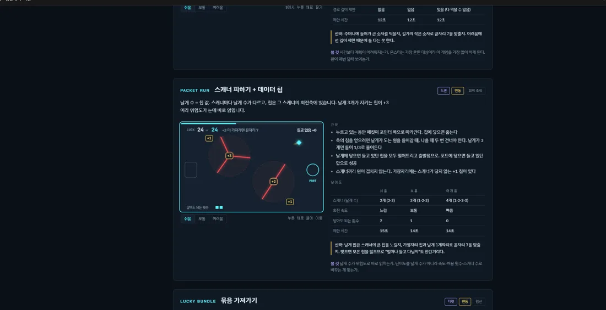
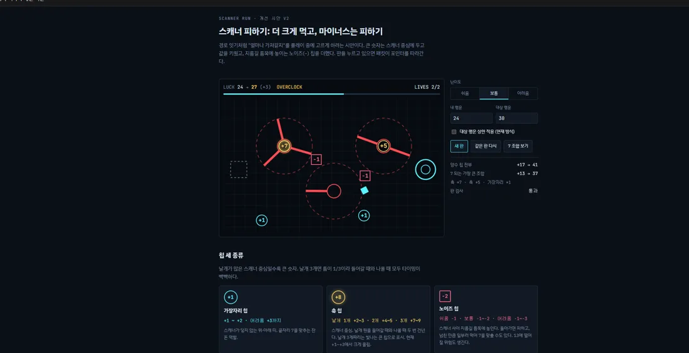
Gunfire Reborn Expedition 33 SinkPoint Destiny Overclock
Official 2026 Unity Game Jam 출품작 · 2026.11 · 9일 · Unity 3인 팀
Destiny
적의 행운(0~99 숫자)을 해킹으로 빼앗아 보안 시설을 층별로 돌파하는 Unity 6 3D SF 잠입 액션입니다.
맡은 것 핵심 구조(행운·해킹 흐름·게임 상태) · 감시·경보 시스템 · 해킹 미니게임 2종 · 2층 레벨 · 전 층 분위기 설정
팀원이 맡은 것 플레이어 · 적 AI · 1·3·4층 레벨 · 타이틀 씬 구성 · 분위기 리그 코드
2층 오버뷰
2층 레벨 · 플레이 화면
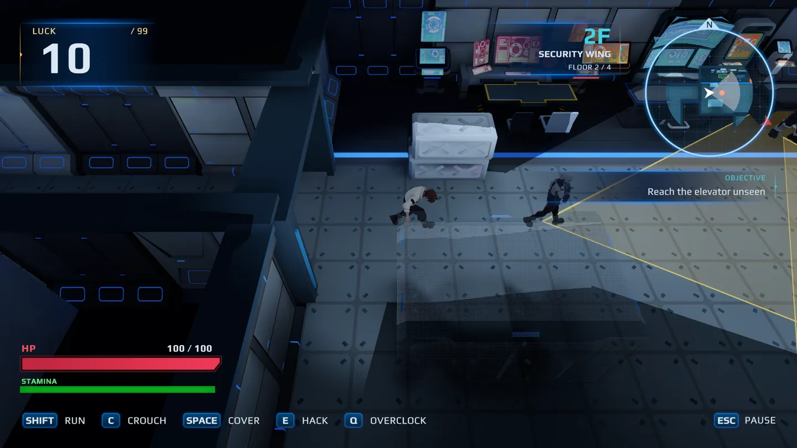
01 적의 감시 시야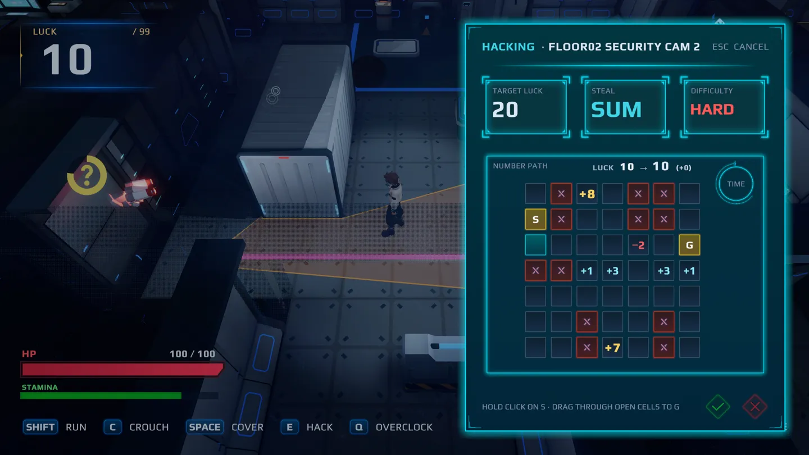
02 CCTV 해킹03 CCTV 시야를 피해 이동04 해킹으로 행운을 빼앗긴 적은 기절합니다
사례 01 · 실패에서 바꾼 것
13번
서브에이전트에 13번 맡긴 작업이 자동 확인을 모두 통과했는데,
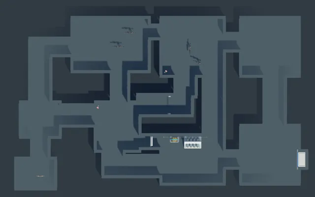
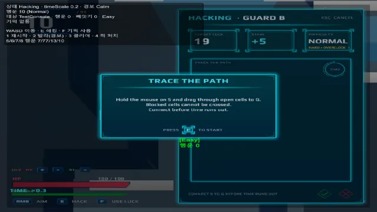
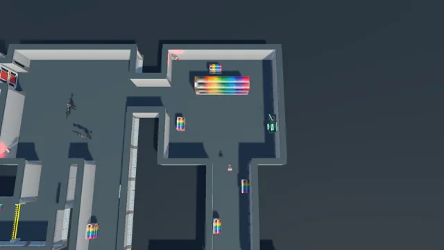
사례 01 · 실패에서 바꾼 것
1분
직접 플레이한 지 1분도 안 돼, 화면이 시작 지점 벽에 고정된 걸 발견했습니다.
Notes/012_floor02_build/subagent_log.md
22 · 위임 #5~#12 서브들이 캡처용 _CaptureCam(DontSave)을 지우지 않아 Editor 메모리에 4개 남음. 씬 파일에는 없지만 깊이 0이라 Main Camera(-1)를 덮어,
사용자 직접 플레이 때 화면이 시작 지점 벽에 고정된 것처럼 보임. 서브 보고는 모두 "임시 카메라 삭제"였음
AI 협업에서 가장 많이 배운 건 잘 된 위임보다 실패한 위임 이었습니다.
원인남아 있던 카메라 4개
서브에이전트는 모두 "삭제했다"고 보고했지만, 캡처용 임시 카메라 4개가 Editor 메모리에 남아 메인 카메라를 덮고 있었습니다. 씬 파일에는 없어서, 저장소만 보는 확인으로는 잡을 수 없는 문제였습니다.
바꾼 것확인 단계
단계마다의 확인은 메인 세션에 맡기되, Play 모드가 꺼졌는지, 임시 카메라가 남았는지, Game 창 크기가 그대로인지 Editor 상태까지 보고 캡처도 한 장 이상 직접 열어 보게 했습니다.
층 전체의 흐름, 큰 버그, 플레이가 매끄러운지와 재미는 AI만으로 판단할 수 없어 제가 직접 플레이하며 봤고 , 그 지점을 계획에 미리 넣어 두었습니다.
2건
바꾼 뒤 첫 작업에서는 메인 세션의 플레이 확인이 서브에이전트 보고에 없던 문제 2건, 벽 속에 들어간 좌표와 잘못 넣은 전환 키를 찾아냈습니다.
이틀 뒤에는 서브에이전트가 하나뿐인 Editor를 오래 붙잡아 작업이 멈췄습니다. 그 뒤로 Editor·씬 작업은 서브에이전트에 넘기지 않고, 메인 세션에서 한 단계씩 짧게 진행했습니다.
사례 02 · 시안으로 결정
발각 방식은 직접 해 볼 수 있는 시안 으로 비교해 정했습니다
Claude로 만든 웹 페이지 시안(아티팩트)에서, CCTV에 들키면 즉사하는 방식과 노출 게이지가 차오르는 방식을 토글로 번갈아 해 봤습니다. 시안에는 계획서 초안의 수치를 그대로 넣어, 숫자 하나만 바꿔 그 자리에서 다시 해 볼 수 있었습니다.
아티팩트 2층 청사진 시안 (자동 재생)
2층 구조도 Unity에서 짓기 전에, 동선과 적·CCTV 시야가 움직이는 탑뷰 시안으로 먼저 잡았습니다.
점선 플레이어 동선부채꼴 적과 CCTV의 시야아래 표시줄 행운과 노출 게이지
시안을 만지다 머리 위 ?(소리 들음)·!(발각) 마커 아이디어를 얻었습니다.
다만 탑뷰라 거리감이 달라, 소품이 복도를 막은 건 Unity에서 고쳤습니다. 그 뒤로 시안은 동선·시야 같은 논리를, Unity는 통로 폭 같은 실제 크기를 확인하는 데 썼습니다.
팀과 상의해 즉사를 없앴습니다.
대신 들키면 노출 게이지가 차오르고, 층 전체에 경보가 울리고, 출구가 잠깁니다.
해킹 미니게임은 시안을 세 차례(10종 → 5종 → 데모·행운 계산기) 다시 만들었고, 직접 해 보면서 "재미와 숫자 선택이 같이 있어야 한다"는 기준을 세웠습니다.
빼앗은 행운을 길을 여는 비용과 적을 멈추는 스킬, 두 갈래로 쓰는 흐름도 시안으로 보여 주고 팀 동의를 받았습니다. 팀과는 설명 대신 시안 링크를 보내 상의했습니다.
9일 동안 만든 아티팩트 24개
난관과 해결
2층 조명 굽기, 외부 모델의 라이트맵 UV 누락
천장이 뚫린 2층에 실시간 해 그림자가 대각선으로 졌습니다. 웹에서 돌아가는 게임이라, 실시간 조명을 늘리는 대신 조명을 미리 굽기로 했습니다.
32/77
시험 삼아 구워 보니 77개 중 32개가 빠졌습니다. 라이트맵용 UV(uv2)가 없고 기본 UV도 겹친 외부 에셋 모델이 "invalid Mesh"로 제외된 것이었습니다.
Tasks/03_completed/027_floor02_light_bake_plan.md
결과: 2026-11-12. 방 S와 북쪽 복도… 의 렌더러 77개를 Static으로 지정하고 Baked 스포트 5개… 로 구웠다. …
77개 중 32개가 굽기에서 빠졌다. ithappy 모델(벽 Panel, 바닥 Tile, 소파·책상·바리케이드 등)은 라이트맵 UV(uv2)가 없고 uv0도 겹쳐서 "invalid Mesh"로 제외된다.
230
메모리 안에서만 임시 UV를 넣어 다시 구워 보고 원인을 확인한 뒤, 팀 동의를 받아 1·2·3층이 쓰는 모델 230개에 Generate Lightmap UVs를 켰습니다.
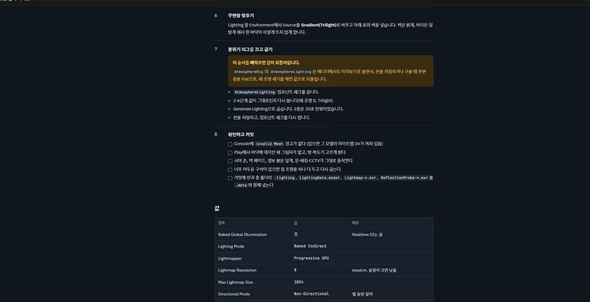
0
다시 확인하니 uv2 없는 모델은 0개, 바뀐 파일은 설정 파일(.meta) 230개뿐이었습니다.
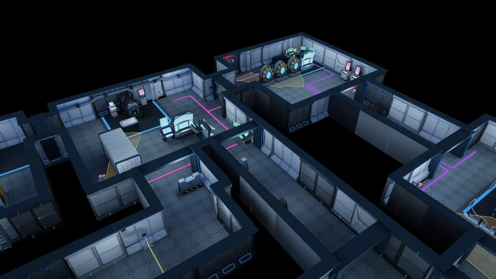
2층은 Baked 점 조명 81개·Light Probe 490개 로 "invalid Mesh" 경고 없이 구웠습니다.
굽는 방법은 가이드로 정리해 넘겼고, 다른 층은 각 담당이 이 가이드를 보고 직접 구웠습니다.
아티팩트 팀에 넘긴 층 조명 굽기 가이드
Clair Obscur: Expedition 33 모작 · 2026.05–07 · 프로그래밍 8인 팀 · C++ · DirectX 11 · HLSL(Compute Shader)
Expedition
프로그래머 8명이 함께 만든 모작에서 이펙트를 혼자 맡았습니다. 이펙트를 만드는 툴(EffectEditor)부터 게임 안 전투 이펙트까지 직접 만들었습니다.
맡은 것 독립 EffectEditor · 이펙트 런타임 · 메인 전투 VFX · 일부 화면 후처리 효과(흑백 연출·Flash)
팀원이 맡은 것 화면 효과 틀 · Stencil bit0 · 디퍼드·MRT
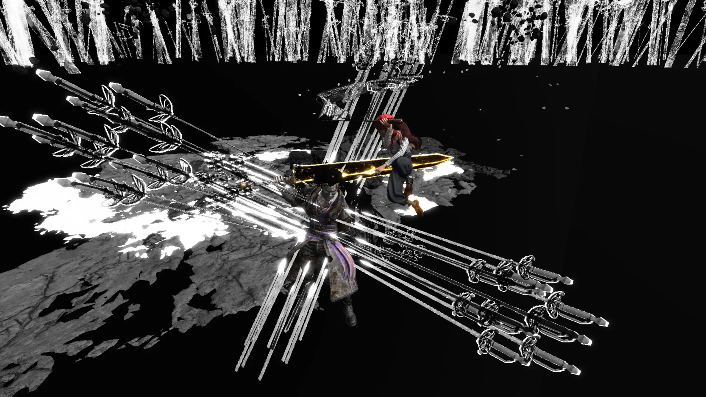
게임 화면 스탕달검 여섯 자루를 자루마다 Mesh 이미터 다섯 개와 Ribbon 하나로 쌓았습니다. Mesh 이미터는 살아 있는 검을 인스턴싱으로 한 번에 그립니다.
이미터 40개 Mesh ×30 Ribbon ×6 Sprite ×4
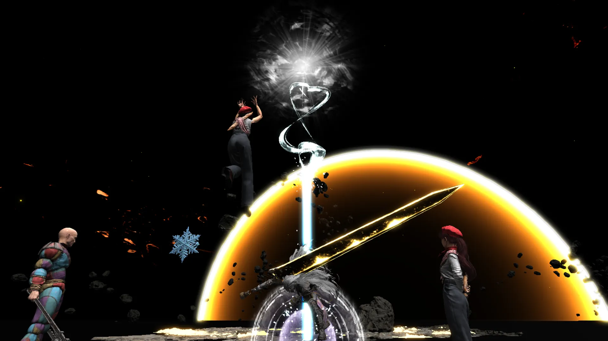
게임 화면 하늘 파괴시작·충전·유성·빔·최종 폭발, 다섯 파일이 애니메이션의 정해진 시점에 차례로 재생됩니다. 불꽃과 빛은 Sprite, 유성과 폭발 파편은 Mesh, 하늘에서 내리는 광선은 Beam이 맡았습니다.
이미터 45개 Sprite ×28 Mesh ×16 Beam ×1
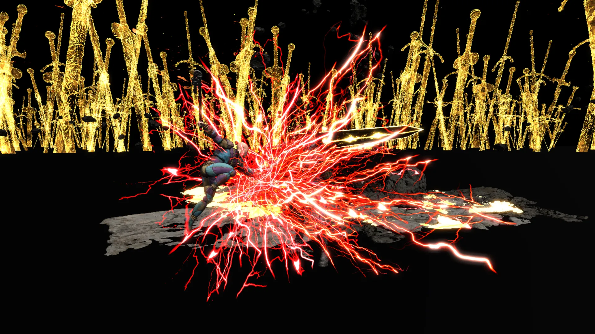
게임 화면 과충전손 소켓과 발사체가 지나간 자리를 SpriteTrail이 따라가며 번개 꼬리를 남깁니다. 손과 궤적은 애니메이션 노티파이 구간 내내 유지되고, 그 안에서 해방 이펙트가 터집니다.
이미터 16개 Sprite ×11 SpriteTrail ×5
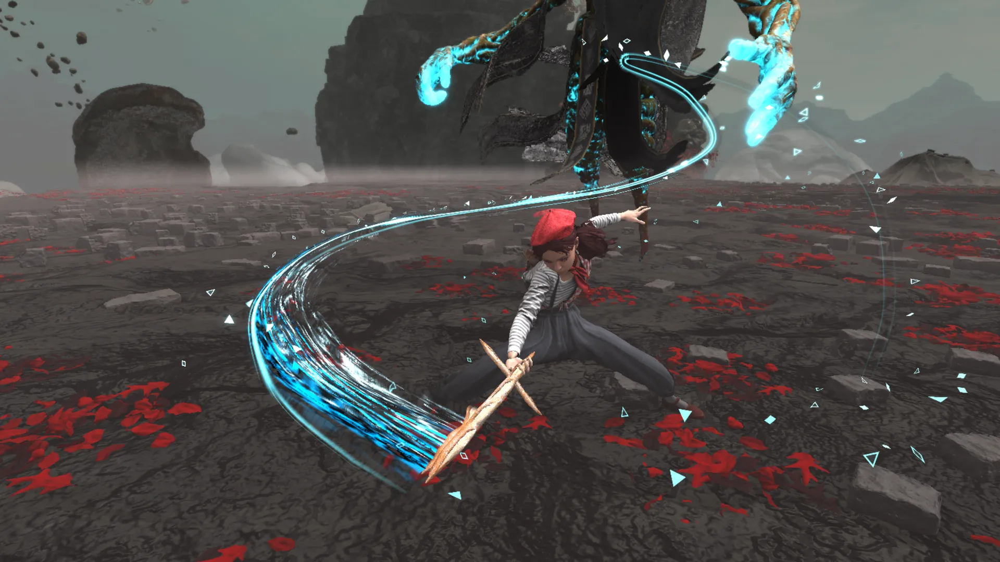
게임 화면 검의 발레Trail 네 개가 검을 따라 띠를 그리고, SpriteTrail이 그 궤적 위에 입자를 흩뿌리고, Ribbon이 꼬리를 붙입니다. 같은 구성을 색만 바꿔 13가지로 썼습니다.
이미터 6개 Trail ×4 SpriteTrail ×1 Ribbon ×1
이미터를 조합한 VFX
스탕달 하늘 파괴 과충전 검의 발레
사례 01 · 계획서 검토와 승인 범위
AI가 쓴 계획서는 돌려보내며 다듬었고 , 지켜지지 않는 규칙은 hook으로 막았습니다
작업 한 건이 흘러가는 순서
계획서 작성Codex 검토 · 반려나 승인나 구현Codex
계획서에 범위, 하지 않을 것, 검증 기준이 분명하지 않으면 돌려보냈습니다. 엔진 모듈이나 공용 API를 건드리는 일, 새 패턴을 들이는 일은 먼저 제 승인을 받게 했습니다. 계획서에는 이번에 승인하는 범위와 승인에 넣지 않는 범위를 나눠 적게 해, 구현 중에 그 밖의 변경이 필요해지면 멈추고 다시 승인을 받게 했습니다.
원작 이펙트 자료를 찾고 분석하는 일과 툴 UI의 뼈대는 AI에 맡겼습니다. 인스턴싱을 어디까지 적용할지(Sprite부터), 왜곡 효과를 무엇으로 표현할지(Sprite 대신 Mesh)는 AI 제안과 비교해 제가 정했습니다.
계획서 승인하는 범위와 승인 밖 범위를 나눠 적은 Phase 3 계획서
docs/tasks/03_completed/cascade_distortion_phase3_sprite_runtime_prototype_plan.md
Approval Boundary Phase 3 구현은 아래 surface를 건드릴 수 있으므로 승인 후 진행한다.
Client runtime codeshader file resource binding path 아래는 이번 Phase 3 구현 승인에 포함하지 않는다.
Engine/Public type 추가 / 변경renderer frame order 변경 EffectEditor UI 변경 … 만약 구현 중 Engine/Public type이나 renderer frame order 변경이 추가로 필요해지면, Phase 3 범위를 멈추고 별도 승인으로 전환한다. Phase Plan 1. Runtime path audit …
verify: SpriteDistortion branch가 desc 적용 이후 안정적으로 판단 가능한 위치를 찾는다.
hook
규칙을 글로 적어 둬도 지켜지지 않는 곳이 있었습니다. 그런 곳은 hook을 걸어, AI가 명령을 실행하기 직전에 막았습니다.
막은 것: 원본 셰이더를 읽기 전 수정 · 데이터 테이블 보호 · 되돌릴 수 없는 git 명령
난관과 해결
EffectEditor 저작 데이터와 게임 Runtime 연결
툴에서 본 이펙트와 게임에서 나오는 이펙트가 다르면 툴을 믿을 수 없습니다. 그래서 툴과 게임이 같은 데이터를 읽게 해야 했습니다.
툴은 만들고 저장하는 일만, 게임은 불러오는 일만 맡기고, 재생 정의(EffectDefinition)는 엔진에 하나만 두었습니다.
게임은 툴에서 저장한 JSON을 불러와, 툴 미리보기와 같은 EffectDefinition으로 재생합니다.
OpenAI Game Builders Seoul 2026 예선 제출작 · 2026.08 · 5일 · Unity 2인 팀 · Codex · Unity MCP
SinkPoint
중력 방향이 바뀌는 공간을 그래플로 이동하는 3D 액션 어드벤처입니다. 둘이서 5일 동안 Codex·Unity MCP와 함께 만들었습니다.
맡은 것 Player · Camera · 전투 연동 · 방향성 중력 · 그래플 이동 · Unity MCP 초기 설정과 팀용 재현 가이드
팀원이 맡은 것 MVP 기획 · 몬스터 · 레벨
싱크홀 입구
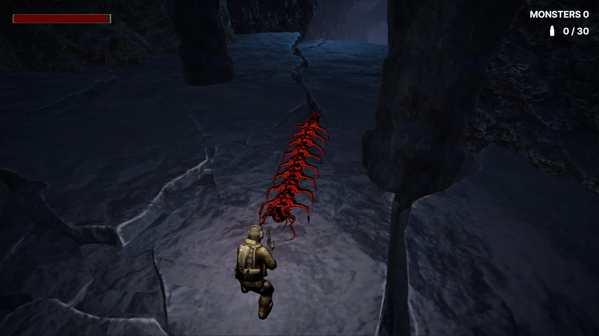
물리(Rigidbody) 위에서 걷고, 달리고, 웅크리고, 쏘고, 장전하는 기본 조작을 만들었습니다.
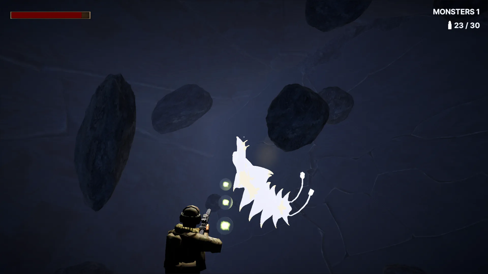
무중력에서 총을 쏘면 반동으로 몸이 쏜 반대쪽으로 밀리도록 했습니다. 자연스럽게 느껴지는 세기는 직접 플레이하며 정했습니다.
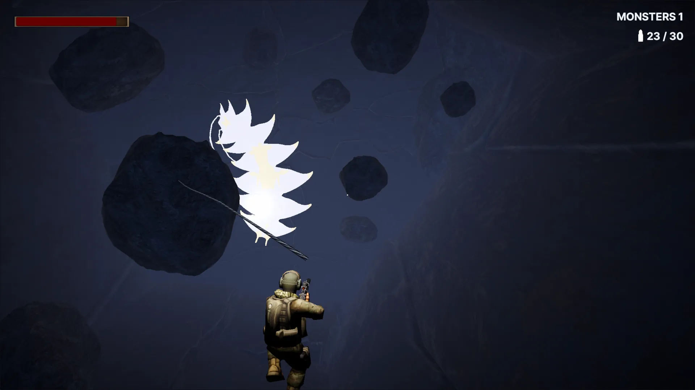
무중력에서는 그래플로 줄을 걸어 몸을 당겨 이동합니다.
일반 방향 전환 측면 무중력 그래플
사례 01 · 처음 써 본 Unity MCP
처음 써 본 Unity MCP, 범위부터 정했습니다
Unity MCP는 이때 처음 썼습니다. AI가 Unity 에디터를 직접 다룰 수 있게 되면서 씬 복제, 프리팹 생성, 참조 연결, 플레이 실행까지 맡겼고, 저는 그만큼 직접 플레이하며 세부를 다듬었습니다.
팀은 각자 자기 씬에서 작업하기로 정해 두었습니다. 그래서 AI도 원본을 복제한 제 Player 씬 안에서만 작업하게 했습니다.
Codex 사용처 사람이 직접 결정한 부분 검증 결과
작업 기록 33개는 모두 이 세 칸으로 나눠 남겼습니다. 끝낸 계획은 22개입니다.
직접플레이
전환 연출 시간 같은 체감 값과 완료 판단은 직접 플레이로 정했습니다.
중력 전환 오차·사격 Ray 정렬 같은 상태 값은 Play Mode 자동 확인으로 수치화했습니다.
AI가 작업하다 프로젝트 설정을 바꿔 놓은 곳은 찾아서 원래 값으로 되돌렸습니다.
난관과 해결
방향성 중력에서 플레이어·카메라·물리 정렬
중력 방향이 바뀌면 '위'가 어디인지를 이동, 물리, 캐릭터 모습, 카메라가 각자 다르게 알고 있었습니다.
'위' 방향은 GravityState 한 곳에만 두고, 플레이어와 카메라가 모두 그 값을 따르게 했습니다.
중력이 고정된 곳, 주기적으로 바뀌는 곳, 무중력 구역을 오가도 모두 같은 '위'를 씁니다. 바꿀 때마다 컴파일, 참조, 플레이, 콘솔을 함께 확인했습니다.
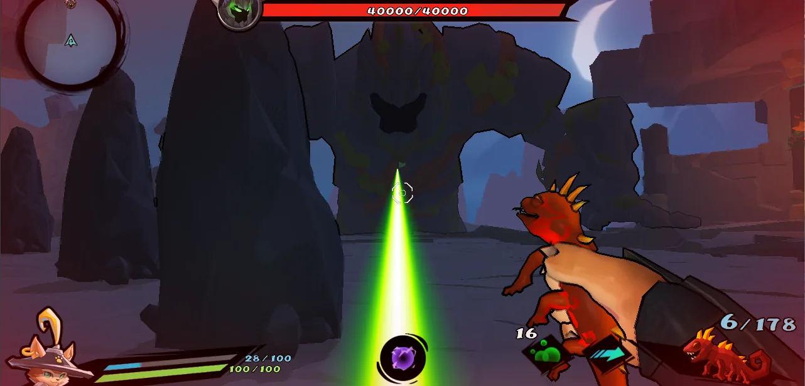
2026.01–04 · 약 3개월 · 개인 프로젝트 · C++ · DirectX 11 · HLSL · ImGui
Gunfire모작
수업에서 받은 DirectX 11 골격(장치 초기화, Engine·Client 두 층, 디퍼드 렌더링)에서 출발해, 게임 로직 층과 레벨 에디터, 데이터 파이프라인, 충돌 체계를 직접 더해 키운 개인 프로젝트입니다.
직접 구현한 것 GameLogic 층 분리 · 게임플레이(플레이어 행동 · 몬스터 AI · 히트스캔·충돌 판정) · 그림자·외곽선 렌더링
AI에 맡긴 것 계획서 작성 · 에디터의 ImGui 화면 · 자잘한 수정과 버그 수정 일부
보스 전투
플레이 화면
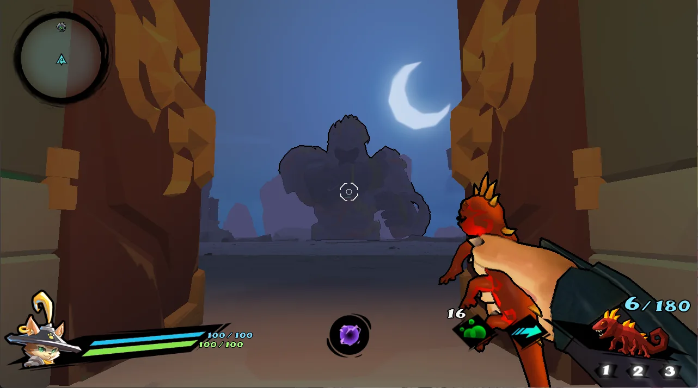
01 전투 장면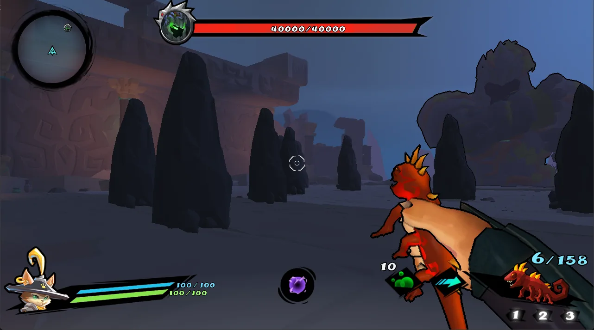
02 보스 패턴 · 바위 기둥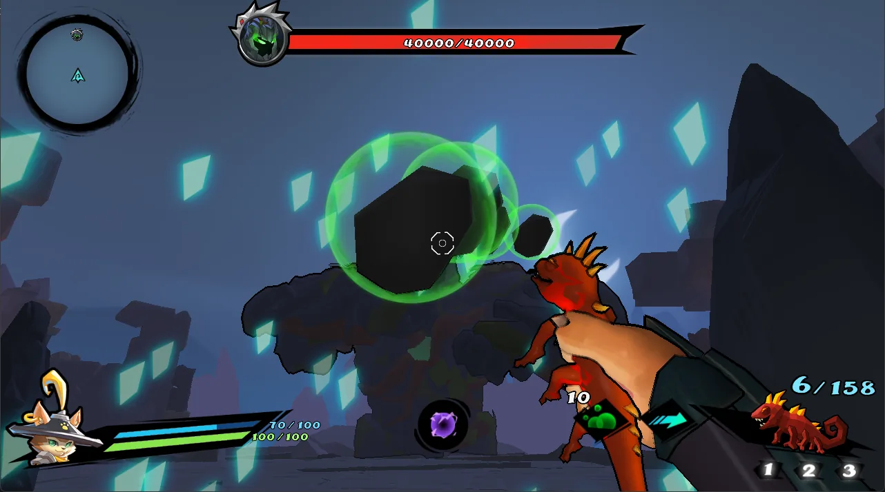
03 보스 패턴 · 추적 바위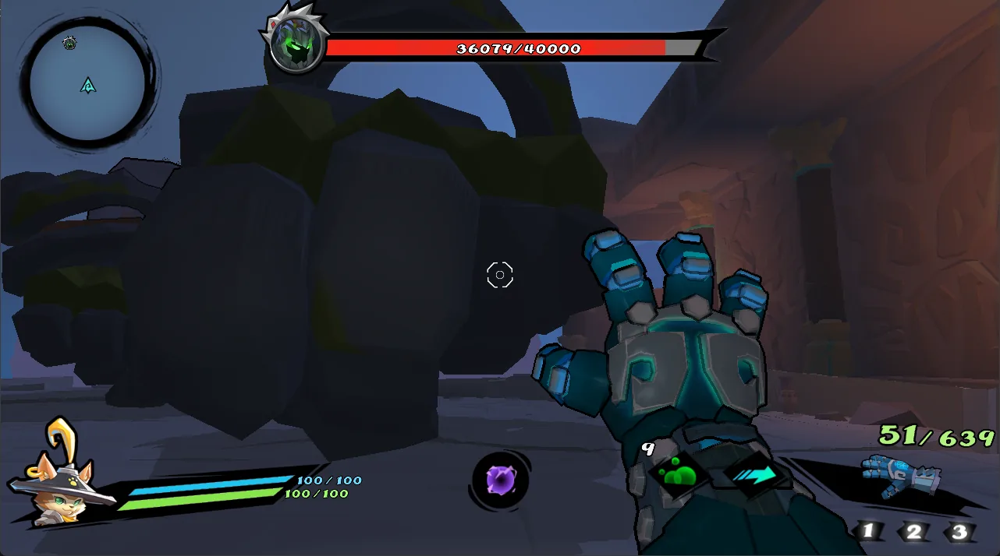
04 보스 패턴 · 주먹 발사
class ENGINE_DLL CGameInstance final : public CBase
{
public :
static CGameInstance * GetInstance ();
…
private : unique_ptr<CGraphicDevice> m_graphicDevice; unique_ptr<CLevelManager> m_levelManager; unique_ptr<CRenderer> m_renderer; …
};
사례 01 · 직접 정한 구조
Engine → GameLogic → Client·Editor, 의존 방향을 고정했습니다.
코드 CGameInstance에디터 레벨 에디터: 계층 창, 기즈모, 저장·불러오기
Engine 수업에서 받은 골격 · 일부 다듬음
GameLogic 직접 분리해 더한 층
Client · Editor 실행 앱과 에디터가 GameInstance의 같은 공용 API를 씁니다
AI에 맡긴 범위 · Codex
100개
AI에게 줄 작업 규칙은 저장소의 AGENTS.md 한 파일에 모았고, 계획은 끝낸 것과 버린 것까지 문서로 남겼습니다.
완료 100개 · 폐기 26개 (Post_Project 폴더 제외)
사례 02 · 직접 구현
몬스터를 몸체와 머리 파츠로 나눠, 어디를 맞혔는지 따로 판정합니다.
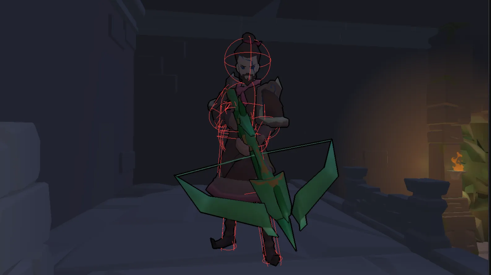
에디터 히트박스 표시를 켠 모습몸체와 머리를 따로 판정하는 히트박스를 몬스터 몸에 달았습니다.
에디터 앉아 조준하는 자세몬스터가 앉아 조준하는 자세에서도 히트박스가 몸을 따라갑니다.
게임 화면 머리를 맞혔을 때머리를 맞히면 피해 배율과 헤드샷 표시가 붙고, 피해 숫자 색이 달라집니다.
몸체와 머리를 한 번에 검사해 가장 가까운 파츠를 맞은 곳으로 고르고, 거리가 같으면 머리를 우선합니다.
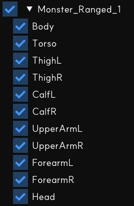
원거리 몬스터의 파츠 계층
난관과 해결
1인칭 팔 모델과 무기 모델의 애니메이션 동기화
1인칭 팔과 무기는 뼈대와 애니메이션이 따로라, 게임이 도는 내내 둘을 맞춰 줘야 했습니다.
해결제작 단계로 옮김
게임 안에서 맞추는 대신 만들 때 미리 합쳤습니다. Unity에서 팔과 무기를 한 모델로 묶어 애니메이션을 입혀 FBX로 내보내고, 직접 만든 변환 툴(Assimp)로 게임용 데이터로 바꿨습니다.
결과단일 데이터 재생
게임은 합쳐진 데이터 하나만 재생 하면 되니, 팔과 무기를 맞추는 코드가 필요 없어졌습니다.